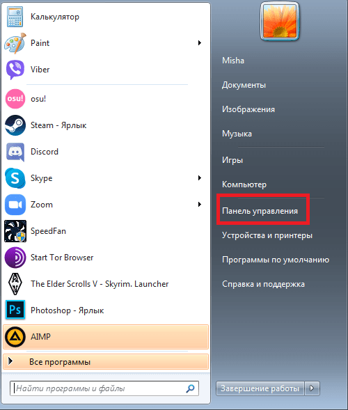
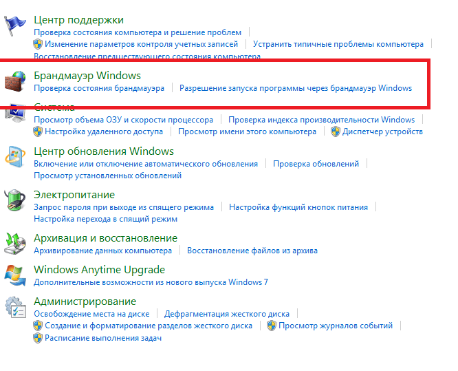
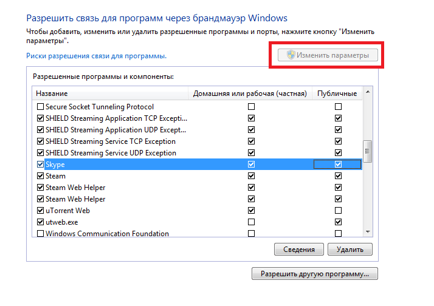
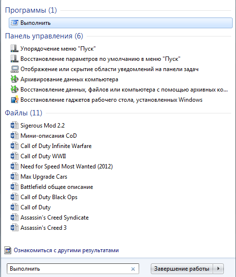
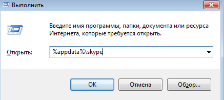

Не входит в аккаунт в Skype
Одна из частых проблем программы Skype – ошибка при входе в аккаунт. В этой статье мы поговорим о причинах этой ошибки и о путях ее решения.
| Неверный логин или пароль ↓ | Проблемы с файлами в Skype ↓ |
Самое простое – неверный логин или пароль в Skype
Если вы забыли логин или пароль, или уже 100 раз попробовали ввести свой заведомо правильный логин с паролем, но так ничего и не вышло, то все равно есть несколько вариантов решения на самые простые случаи:
- Проверьте раскладку клавиатуры. Возможно при нажатии на поле ввода, ваша раскладка меняется на русскую или иноязычную;
- Проверьте, не нажата ли клавиша Caps Lock, когда у вас в пароле только маленькие буквы;
- В конечном счете, если вы помните только свой логин, то нажмите на надпись: «Забыли пароль?». Откроется окно с разными вариантами восстановления пароля, обычно через привязанную почту или номер. Если последние символы ваших почты и пароля не совпадают с теми, которые вы привязывали, перейдите к следующему варианту решения;
- Если ничего не помогло, проверьте свою почту. Для этого напишите в поисковик писем слова «Skype» или «Microsoft», тоже самое опробуйте в папке «Спам», если вас взломали, то Майкрософт обязательно вас об этом уведомит. Далее напишите письмо в техническую поддержку или заполните анкету на сайте, постарайтесь дать все полезные достоверные данные о аккаунте, которые могли знать только вы. Вам обязательно ответят и помогут.
Если ничего не помогло, последуйте следующим советам.
Проблемы с интернетом
Вторая по популярности причина невозможности входа в аккаунт – плохое соединение или проблемы с интернетом. Признаки проблемы – отсутствие ошибок, когда вы не можете войти и долгая реакция или отсутствие реакции программы на нажатие кнопки входа, что свидетельствует о проблеме со связью с серверами.
Самая банальная вещь, что вы должны сделать – проверить дату и время. Они должны быть правильно выставленными, в соответствии с реальным временем в вашем регионе.
Простой вариант проверить скорость интернета – сайт speedtest.net. В худшем случае результат на сайте должен быть равен 2.5-3 Mbps, что является уровнем плохого мобильного интернета. Если сайт вообще не загружается или результаты меньше этих минимальных требований, то вам следует обратиться к вашему провайдеру.
Если все с интернетом нормально, следует посмотреть на исключения брандмауэра Windows. Для этого:
- Нажимаем пуск;
- В правом меню пуска находим «Панель управления» и нажимаем на нее;
- Находим и открываем «Система и безопасность»;
- Находим и открываем «Брандмауэр Windows»;
- В левом меню находите выделенную надпись и кликаете по ней;
- Нажимаете «Изменить параметры». Прокручиваете в поле программ до буквы S и находите Skype, у него должно стоят 2 галочки.
{kind=link}
{kind=link}
{kind=link}
Проблемы с файлами Скайпа
Возможно, из-за ошибок Windows могли поломаться сами файлы скайпа, так что стоит их проверить. Для этого:
- Нажимаете клавиши Win + Alt или вводите в пуске слово «Выполнить», после чего кликаете по выделенной программе;
- В окне «Выполнить» пишете «%appdata%\skype» и нажимаете «ОК»;
- В этой папке должны быть несколько файлов:
- iscorupt,
- bat,
- Run-skype.vbs.
- Если их нет, следуем следующей инструкции:
- Если нет файла «main.iscorupt», то скачиваем его из интернета или переустанавливаем Скайп полностью;
- Создаем текстовый файл Skype и заполняем его текстом
«DEL /F /S /Q /A «C:\Users\(имя вашего компьютера)\AppData\Roaming\Skype\LOGIN-SKYPE\main.iscorrupt» «C:\Program Files (x86)\Skype\Phone\Skype.exe» еxit»; - «Сохраняем как» файл, переписывая его расширение в .bat, должно получиться «Skype.bat»;
- Создаём текстовый файл Run-skype и заполняем его текстом
«(н)Set WshShell = CreateObject(«WScript.Shell»)$
Run «Skype.bat», 0, false(к).»; - «Сохраняем как» файл, переписывая его расширение в .vbs, должно получиться «Run-skype.vbs».
- Если и это не получилось, находим файл «shared.xml» и удаляем его.
{kind=link}
{kind=link}
Мы разобрали самые популярные и эффективные пути решения различных проблем, вызывающих одну проблему – ошибку при входе в программу. Надеемся, что они помогут вам решить эту неприятную проблему.